Пуск и зарядка
Обозначения и точки массы · система пуска и зарядки · муфта вентилятора радиатора · обогрев жиклёров омывателя
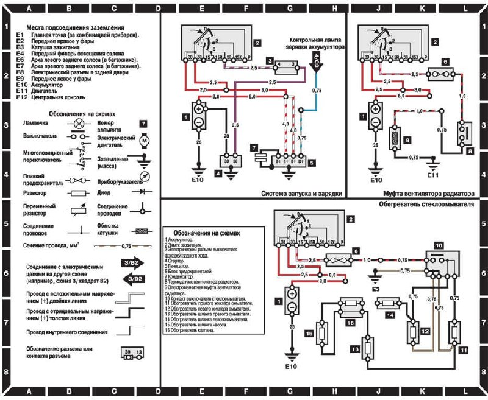
Салон и дворники
Освещение салона, багажника и вещевого ящика · стеклоочиститель и омыватель
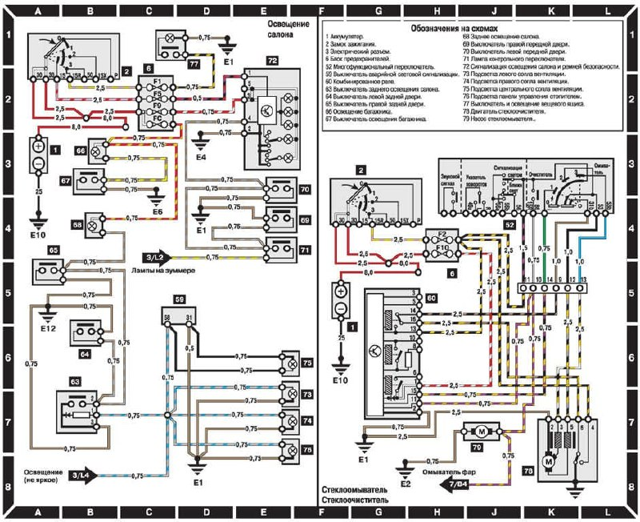
Зеркала, магнитола, замок
Зеркала с электроприводом и подогревом · магнитола и антенна · центральный замок · натяжители ремней
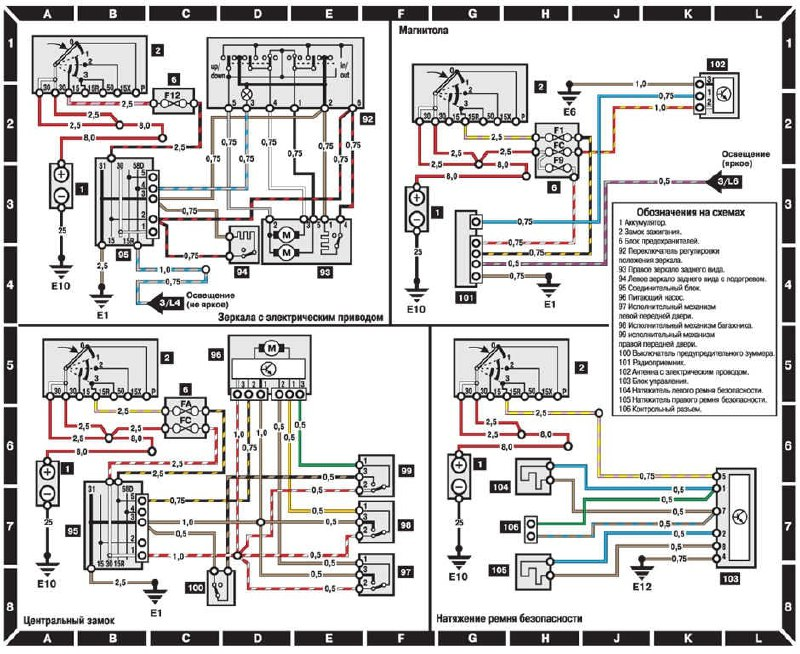
Фары и фонари
Переключатель света · блок управления освещением · фары, задние фонари, подсветка номера
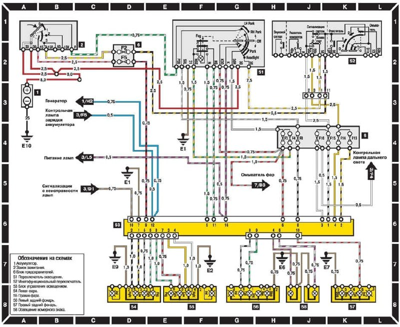
Поворотники и стопы
Указатели поворота · аварийная сигнализация · стоп-сигналы · фонари заднего хода
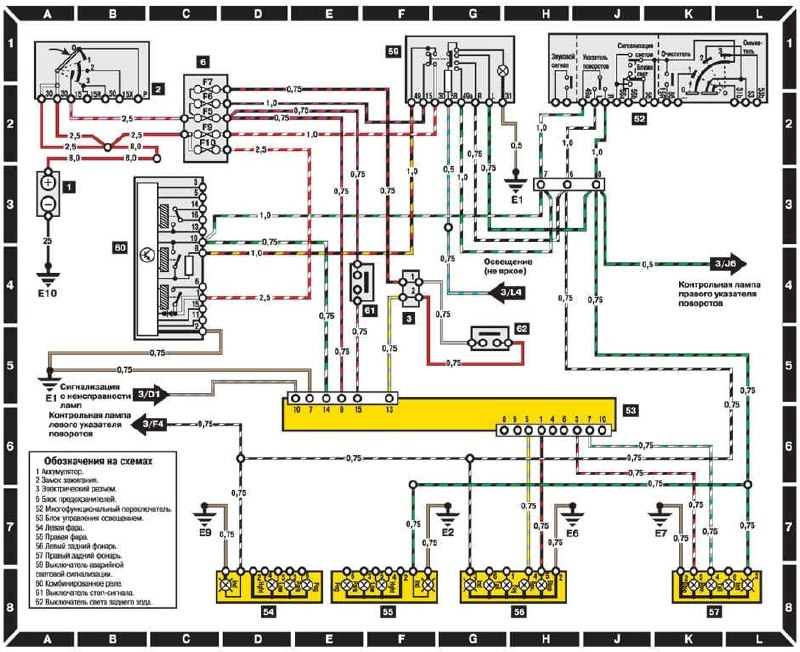
Приборы и датчики
Комбинация приборов · датчики уровня топлива, масла, жидкостей · износ колодок · стояночный тормоз
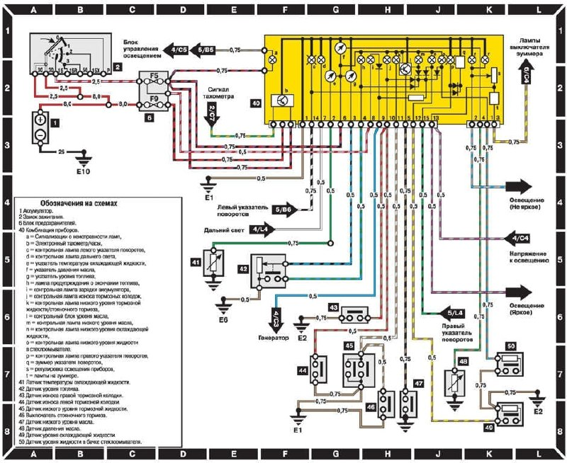
Печка, обогрев, сигнал
Очистители фар · вентилятор отопителя · обогрев заднего стекла · прикуриватель и звуковой сигнал
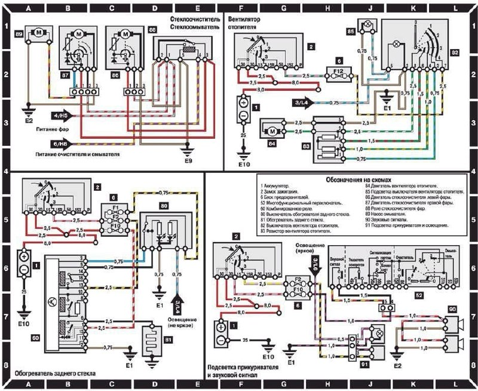
Климат и стеклоподъёмники
Система автоматического обогрева · электростеклоподъёмники всех дверей
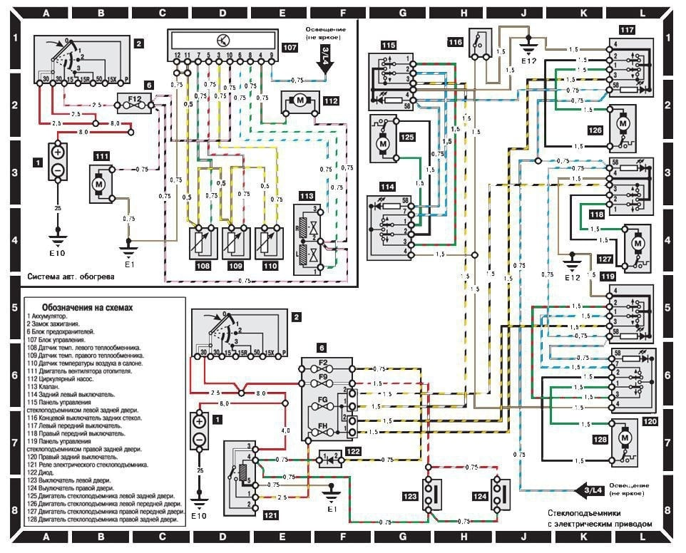
Двигатель: EZL и KE-Jetronic
Зажигание EZL · впрыск KE-Jetronic · топливный насос и реле · лямбда-зонд · датчики двигателя
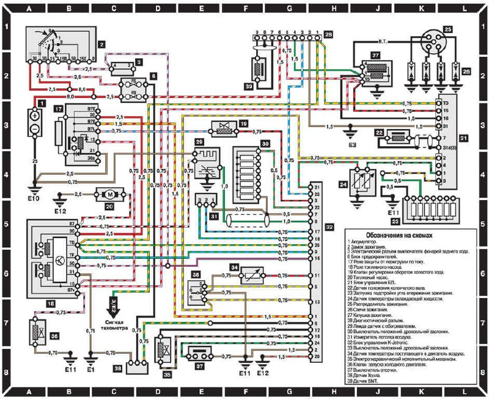
Разъём приборки: 15 контактов
Назначение контактов 15-контактного разъёма панели приборов, таблица из книги по ремонту
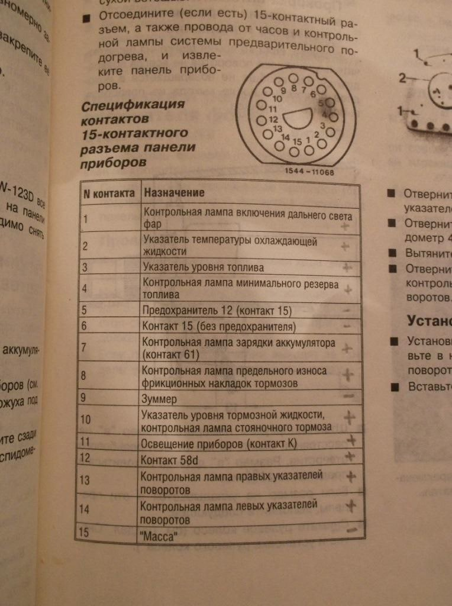
Разъём приборки: другая нумерация
Тот же 15-контактный разъём, но по другому источнику. Нумерация отличается от листа 10, она зависит от версии приборки: сверяйся с проводами.
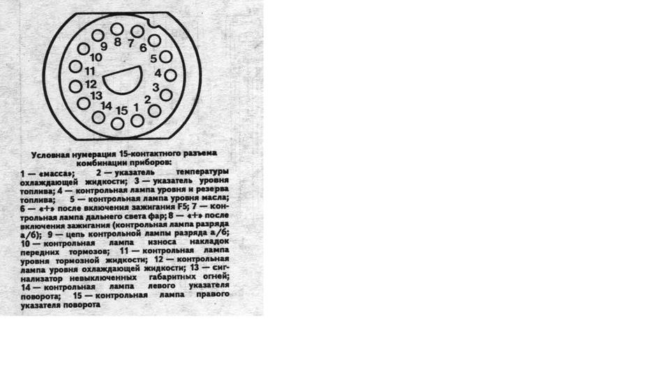
Блок предохранителей
Расположение предохранителей 1–16 и A–H и их номиналы
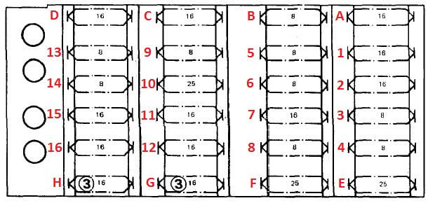
Предохранители: что за что отвечает
Таблица: цвет, сила тока и потребители каждого предохранителя
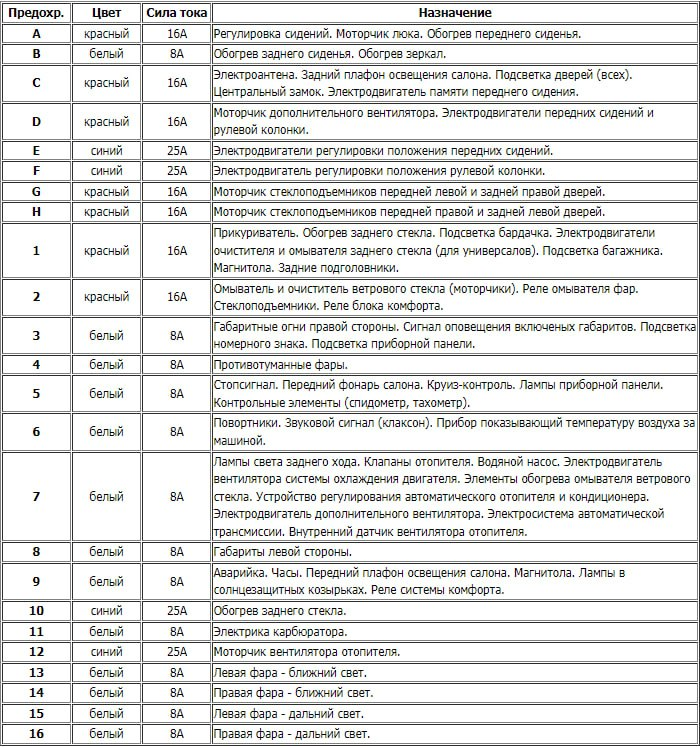
Прикуриватель и звуковой сигнал
Крупный фрагмент схемы: подсветка прикуривателя и звуковой сигнал
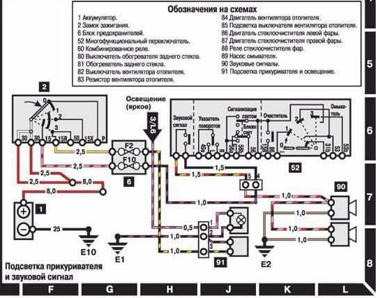
Управление двигателем E280 (HFM)
Цветная схема управления двигателем E280: модуль HFM, форсунки, катушки, датчики, реле защиты от перенапряжения, бензонасосы
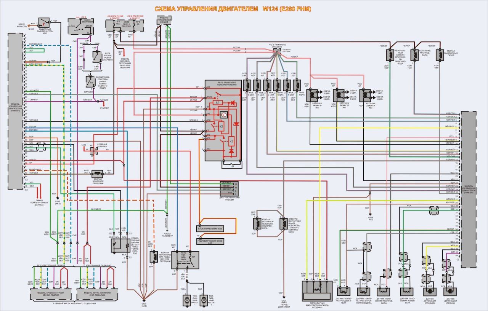
Ничего не нашлось. Попробуй другое слово.